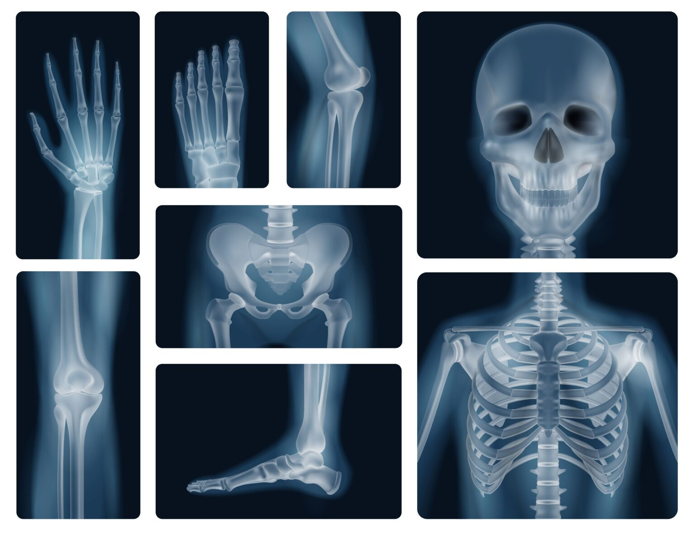

En Nuestro centro de salud ofrecemos tecnologías que permiten a los profesionales de la salud visualizar estructuras, órganos y tejidos, así como detectar anomalías que podrían indicar la presencia de una enfermedad o lesión.